---
title: "Diamond sizes"
date: 2022-09-12
format: html
---
```{r}
#| label: setup
#| include: false
library(tidyverse)
smaller <- diamonds |>
filter(carat <= 2.5)
```
We have data about `r nrow(diamonds)` diamonds.
Only `r nrow(diamonds) - nrow(smaller)` are larger than 2.5 carats.
The distribution of the remainder is shown below:
```{r}
#| label: plot-smaller-diamonds
#| echo: false
smaller |>
ggplot(aes(x = carat)) +
geom_freqpoly(binwidth = 0.01)
```Quarto
Introduction
Quarto provides a unified authoring framework for data science, combining your code, its results, and your prose. Quarto documents are fully reproducible and support dozens of output formats, like PDFs, Word files, presentations, and more.
Quarto files are designed to be used in three ways:
For communicating to decision-makers, who want to focus on the conclusions, not the code behind the analysis.
For collaborating with other data scientists (including future you!), who are interested in both your conclusions, and how you reached them (i.e. the code).
As an environment in which to do data science, as a modern-day lab notebook where you can capture not only what you did, but also what you were thinking.
Quarto is a command line interface tool, not an R package. This means that help is, by-and-large, not available through ?. Instead, as you work through this chapter, and use Quarto in the future, you should refer to the Quarto documentation.
If you’re an R Markdown user, you might be thinking “Quarto sounds a lot like R Markdown”. You’re not wrong! Quarto unifies the functionality of many packages from the R Markdown ecosystem (rmarkdown, bookdown, distill, xaringan, etc.) into a single consistent system as well as extends it with native support for multiple programming languages like Python and Julia in addition to R. In a way, Quarto reflects everything that was learned from expanding and supporting the R Markdown ecosystem over a decade.
Prerequisites
You need the Quarto command line interface (Quarto CLI), but you don’t need to explicitly install it or load it, as RStudio automatically does both when needed.
Quarto basics
This is a Quarto file – a plain text file that has the extension .qmd:
It contains three important types of content:
- An (optional) YAML header surrounded by
---s. - Chunks of R code surrounded by
```. - Text mixed with simple text formatting like
# headingand_italics_.
Figure 1 shows a .qmd document in RStudio with notebook interface where code and output are interleaved. You can run each code chunk by clicking the Run icon (it looks like a play button at the top of the chunk), or by pressing Cmd/Ctrl + Shift + Enter. RStudio executes the code and displays the results inline with the code.

If you don’t like seeing your plots and output in your document and would rather make use of RStudio’s Console and Plot panes, you can click on the gear icon next to “Render” and switch to “Chunk Output in Console”, as shown in Figure 2.

To produce a complete report containing all text, code, and results, click “Render” or press Cmd/Ctrl + Shift + K. You can also do this programmatically with quarto::quarto_render("diamond-sizes.qmd"). This will display the report in the viewer pane as shown in Figure 3 and create an HTML file.

When you render the document, Quarto sends the .qmd file to knitr, https://yihui.org/knitr/, which executes all of the code chunks and creates a new markdown (.md) document which includes the code and its output. The markdown file generated by knitr is then processed by pandoc, https://pandoc.org, which is responsible for creating the finished file. This process is shown in Figure 4. The advantage of this two step workflow is that you can create a very wide range of output formats, as you’ll learn about in ?@sec-quarto-formats.

To get started with your own .qmd file, select File > New File > Quarto Document… in the menu bar. RStudio will launch a wizard that you can use to pre-populate your file with useful content that reminds you how the key features of Quarto work.
The following sections dive into the three components of a Quarto document in more details: the markdown text, the code chunks, and the YAML header.
Exercises
Create a new Quarto document using File > New File > Quarto Document. Read the instructions. Practice running the chunks individually. Then render the document by clicking the appropriate button and then by using the appropriate keyboard short cut. Verify that you can modify the code, re-run it, and see modified output.
Create one new Quarto document for each of the three built-in formats: HTML, PDF and Word. Render each of the three documents. How do the outputs differ? How do the inputs differ? (You may need to install LaTeX in order to build the PDF output — RStudio will prompt you if this is necessary.)
Visual editor
The Visual editor in RStudio provides a WYSIWYM interface for authoring Quarto documents. Under the hood, prose in Quarto documents (.qmd files) is written in Markdown, a lightweight set of conventions for formatting plain text files. In fact, Quarto uses Pandoc markdown (a slightly extended version of Markdown that Quarto understands), including tables, citations, cross-references, footnotes, divs/spans, definition lists, attributes, raw HTML/TeX, and more as well as support for executing code cells and viewing their output inline. While Markdown is designed to be easy to read and write, as you will see in Section 1.4, it still requires learning new syntax. Therefore, if you’re new to computational documents like .qmd files but have experience using tools like Google Docs or MS Word, the easiest way to get started with Quarto in RStudio is the visual editor.
In the visual editor you can either use the buttons on the menu bar to insert images, tables, cross-references, etc. or you can use the catch-all ⌘ + / or Ctrl + / shortcut to insert just about anything. If you are at the beginning of a line (as shown in Figure 5), you can also enter just / to invoke the shortcut.
![A Quarto document displaying various features of the visual editor such as text formatting (italic, bold, underline, small caps, code, superscript, and subscript), first through third level headings, bulleted and numbered lists, links, linked phrases, and images (along with a pop-up window for customizing image size, adding a caption and alt text, etc.), tables with a header row, and the insert anything tool with options to insert an R code chunk, a Python code chunk, a div, a bullet list, a numbered list, or a first level heading (the top few choices in the tool).](quarto/quarto-visual-editor.png)
Inserting images and customizing how they are displayed is also facilitated with the visual editor. You can either paste an image from your clipboard directly into the visual editor (and RStudio will place a copy of that image in the project directory and link to it) or you can use the visual editor’s Insert > Figure / Image menu to browse to the image you want to insert or paste it’s URL. In addition, using the same menu you can resize the image as well as add a caption, alternative text, and a link.
The visual editor has many more features that we haven’t enumerated here that you might find useful as you gain experience authoring with it.
Most importantly, while the visual editor displays your content with formatting, under the hood, it saves your content in plain Markdown and you can switch back and forth between the visual and source editors to view and edit your content using either tool.
Exercises
- Re-create the document in Figure 5 using the visual editor.
- Using the visual editor, insert a code chunk using the Insert menu and then the insert anything tool.
- Using the visual editor, figure out how to:
- Add a footnote.
- Add a horizontal rule.
- Add a block quote.
- In the visual editor, go to Insert > Citation and insert a citation to the paper titled Welcome to the Tidyverse using its DOI (digital object identifier), which is 10.21105/joss.01686. Render the document and observe how the reference shows up in the document. What change do you observe in the YAML of your document?
Source editor
You can also edit Quarto documents using the Source editor in RStudio, without the assist of the Visual editor. While the Visual editor will feel familiar to those with experience writing in tools like Google docs, the Source editor will feel familiar to those with experience writing R scripts or R Markdown documents. The Source editor can also be useful for debugging any Quarto syntax errors since it’s often easier to catch these in plain text.
The guide below shows how to use Pandoc’s Markdown for authoring Quarto documents in the source editor.
## Text formatting
*italic* **bold** ~~strikeout~~ `code`
superscript^2^ subscript~2~
[underline]{.underline} [small caps]{.smallcaps}
## Headings
# 1st Level Header
## 2nd Level Header
### 3rd Level Header
## Lists
- Bulleted list item 1
- Item 2
- Item 2a
- Item 2b
1. Numbered list item 1
2. Item 2.
The numbers are incremented automatically in the output.
## Links and images
<http://example.com>
[linked phrase](http://example.com)
{fig-alt="Quarto logo and the word quarto spelled in small case letters"}
## Tables
| First Header | Second Header |
|--------------|---------------|
| Content Cell | Content Cell |
| Content Cell | Content Cell |The best way to learn these is simply to try them out. It will take a few days, but soon they will become second nature, and you won’t need to think about them. If you forget, you can get to a handy reference sheet with Help > Markdown Quick Reference.
Exercises
Practice what you’ve learned by creating a brief CV. The title should be your name, and you should include headings for (at least) education or employment. Each of the sections should include a bulleted list of jobs/degrees. Highlight the year in bold.
Using the source editor and the Markdown quick reference, figure out how to:
- Add a footnote.
- Add a horizontal rule.
- Add a block quote.
Copy and paste the contents of
diamond-sizes.qmdfrom https://github.com/hadley/r4ds/tree/main/quarto in to a local R Quarto document. Check that you can run it, then add text after the frequency polygon that describes its most striking features.Create a document in a Google doc or MS Word (or locate a document you have created previously) with some content in it such as headings, hyperlinks, formatted text, etc. Copy the contents of this document and paste it into a Quarto document in the visual editor. Then, switch over to the source editor and inspect the source code.
Code chunks
To run code inside a Quarto document, you need to insert a chunk. There are three ways to do so:
The keyboard shortcut Cmd + Option + I / Ctrl + Alt + I.
The “Insert” button icon in the editor toolbar.
By manually typing the chunk delimiters
```{r}and```.
We’d recommend you learn the keyboard shortcut. It will save you a lot of time in the long run!
You can continue to run the code using the keyboard shortcut that by now (we hope!) you know and love: Cmd/Ctrl + Enter. However, chunks get a new keyboard shortcut: Cmd/Ctrl + Shift + Enter, which runs all the code in the chunk. Think of a chunk like a function. A chunk should be relatively self-contained, and focused around a single task.
The following sections describe the chunk header which consists of ```{r}, followed by an optional chunk label and various other chunk options, each on their own line, marked by #|.
Chunk label
Chunks can be given an optional label, e.g.
```{r}
#| label: simple-addition
1 + 1
```#> [1] 2This has three advantages:
You can more easily navigate to specific chunks using the drop-down code navigator in the bottom-left of the script editor:

Graphics produced by the chunks will have useful names that make them easier to use elsewhere. More on that in Section 1.6.
You can set up networks of cached chunks to avoid re-performing expensive computations on every run. More on that in Section 1.8.
Your chunk labels should be short but evocative and should not contain spaces. We recommend using dashes (-) to separate words (instead of underscores, _) and avoiding other special characters in chunk labels.
You are generally free to label your chunk however you like, but there is one chunk name that imbues special behavior: setup. When you’re in a notebook mode, the chunk named setup will be run automatically once, before any other code is run.
Additionally, chunk labels cannot be duplicated. Each chunk label must be unique.
Chunk options
Chunk output can be customized with options, fields supplied to chunk header. Knitr provides almost 60 options that you can use to customize your code chunks. Here we’ll cover the most important chunk options that you’ll use frequently. You can see the full list at https://yihui.org/knitr/options.
The most important set of options controls if your code block is executed and what results are inserted in the finished report:
eval: falseprevents code from being evaluated. (And obviously if the code is not run, no results will be generated). This is useful for displaying example code, or for disabling a large block of code without commenting each line.include: falseruns the code, but doesn’t show the code or results in the final document. Use this for setup code that you don’t want cluttering your report.echo: falseprevents code, but not the results from appearing in the finished file. Use this when writing reports aimed at people who don’t want to see the underlying R code.message: falseorwarning: falseprevents messages or warnings from appearing in the finished file.results: hidehides printed output;fig-show: hidehides plots.error: truecauses the render to continue even if code returns an error. This is rarely something you’ll want to include in the final version of your report, but can be very useful if you need to debug exactly what is going on inside your.qmd. It’s also useful if you’re teaching R and want to deliberately include an error. The default,error: falsecauses rendering to fail if there is a single error in the document.
Each of these chunk options get added to the header of the chunk, following #|, e.g., in the following chunk the result is not printed since eval is set to false.
```{r}
#| label: simple-multiplication
#| eval: false
2 * 2
```The following table summarizes which types of output each option suppresses:
| Option | Run code | Show code | Output | Plots | Messages | Warnings |
|---|---|---|---|---|---|---|
eval: false |
X | X | X | X | X | |
include: false |
X | X | X | X | X | |
echo: false |
X | |||||
results: hide |
X | |||||
fig-show: hide |
X | |||||
message: false |
X | |||||
warning: false |
X |
Global options
As you work more with knitr, you will discover that some of the default chunk options don’t fit your needs and you want to change them.
You can do this by adding the preferred options in the document YAML, under execute. For example, if you are preparing a report for an audience who does not need to see your code but only your results and narrative, you might set echo: false at the document level. That will hide the code by default, so only showing the chunks you deliberately choose to show (with echo: true). You might consider setting message: false and warning: false, but that would make it harder to debug problems because you wouldn’t see any messages in the final document.
title: "My report"
execute:
echo: falseSince Quarto is designed to be multi-lingual (works with R as well as other languages like Python, Julia, etc.), all of the knitr options are not available at the document execution level since some of them only work with knitr and not other engines Quarto uses for running code in other languages (e.g., Jupyter). You can, however, still set these as global options for your document under the knitr field, under opts_chunk. For example, when writing books and tutorials we set:
title: "Tutorial"
knitr:
opts_chunk:
comment: "#>"
collapse: trueThis uses our preferred comment formatting and ensures that the code and output are kept closely entwined.
Inline code
There is one other way to embed R code into a Quarto document: directly into the text, with: `r `. This can be very useful if you mention properties of your data in the text. For example, the example document used at the start of the chapter had:
We have data about
`r nrow(diamonds)`diamonds. Only`r nrow(diamonds) - nrow(smaller)`are larger than 2.5 carats. The distribution of the remainder is shown below:
When the report is rendered, the results of these computations are inserted into the text:
We have data about 53940 diamonds. Only 126 are larger than 2.5 carats. The distribution of the remainder is shown below:
When inserting numbers into text, format() is your friend. It allows you to set the number of digits so you don’t print to a ridiculous degree of precision, and a big.mark to make numbers easier to read. You might combine these into a helper function:
comma <- function(x) format(x, digits = 2, big.mark = ",")
comma(3452345)
#> [1] "3,452,345"
comma(.12358124331)
#> [1] "0.12"Exercises
Add a section that explores how diamond sizes vary by cut, color, and clarity. Assume you’re writing a report for someone who doesn’t know R, and instead of setting
echo: falseon each chunk, set a global option.Download
diamond-sizes.qmdfrom https://github.com/hadley/r4ds/tree/main/quarto. Add a section that describes the largest 20 diamonds, including a table that displays their most important attributes.Modify
diamonds-sizes.qmdto uselabel_comma()to produce nicely formatted output. Also include the percentage of diamonds that are larger than 2.5 carats.
Figures
The figures in a Quarto document can be embedded (e.g., a PNG or JPEG file) or generated as a result of a code chunk.
To embed an image from an external file, you can use the Insert menu in the Visual Editor in RStudio and select Figure / Image. This will pop open a menu where you can browse to the image you want to insert as well as add alternative text or caption to it and adjust its size. In the visual editor you can also simply paste an image from your clipboard into your document and RStudio will place a copy of that image in your project folder.
If you include a code chunk that generates a figure (e.g., includes a ggplot() call), the resulting figure will be automatically included in your Quarto document.
Figure sizing
The biggest challenge of graphics in Quarto is getting your figures the right size and shape. There are five main options that control figure sizing: fig-width, fig-height, fig-asp, out-width and out-height. Image sizing is challenging because there are two sizes (the size of the figure created by R and the size at which it is inserted in the output document), and multiple ways of specifying the size (i.e. height, width, and aspect ratio: pick two of three).
We recommend three of the five options:
Plots tend to be more aesthetically pleasing if they have consistent width. To enforce this, set
fig-width: 6(6”) andfig-asp: 0.618(the golden ratio) in the defaults. Then in individual chunks, only adjustfig-asp.Control the output size with
out-widthand set it to a percentage of the body width of the output document. We suggest toout-width: "70%"andfig-align: center.That gives plots room to breathe, without taking up too much space.
To put multiple plots in a single row, set the
layout-ncolto 2 for two plots, 3 for three plots, etc. This effectively setsout-widthto “50%” for each of your plots iflayout-ncolis 2, “33%” iflayout-ncolis 3, etc. Depending on what you’re trying to illustrate (e.g., show data or show plot variations), you might also tweakfig-width, as discussed below.
If you find that you’re having to squint to read the text in your plot, you need to tweak fig-width. If fig-width is larger than the size the figure is rendered in the final doc, the text will be too small; if fig-width is smaller, the text will be too big. You’ll often need to do a little experimentation to figure out the right ratio between the fig-width and the eventual width in your document. To illustrate the principle, the following three plots have fig-width of 4, 6, and 8 respectively:


If you want to make sure the font size is consistent across all your figures, whenever you set out-width, you’ll also need to adjust fig-width to maintain the same ratio with your default out-width. For example, if your default fig-width is 6 and out-width is “70%”, when you set out-width: "50%" you’ll need to set fig-width to 4.3 (6 * 0.5 / 0.7).
Figure sizing and scaling is an art and science and getting things right can require an iterative trial-and-error approach. You can learn more about figure sizing in the taking control of plot scaling blog post.
Other important options
When mingling code and text, like in this book, you can set fig-show: hold so that plots are shown after the code. This has the pleasant side effect of forcing you to break up large blocks of code with their explanations.
To add a caption to the plot, use fig-cap. In Quarto this will change the figure from inline to “floating”.
If you’re producing PDF output, the default graphics type is PDF. This is a good default because PDFs are high quality vector graphics. However, they can produce very large and slow plots if you are displaying thousands of points. In that case, set fig-format: "png" to force the use of PNGs. They are slightly lower quality, but will be much more compact.
It’s a good idea to name code chunks that produce figures, even if you don’t routinely label other chunks. The chunk label is used to generate the file name of the graphic on disk, so naming your chunks makes it much easier to pick out plots and reuse in other circumstances (e.g., if you want to quickly drop a single plot into an email).
Exercises
- Open
diamond-sizes.qmdin the visual editor, find an image of a diamond, copy it, and paste it into the document. Double click on the image and add a caption. Resize the image and render your document. Observe how the image is saved in your current working directory. - Edit the label of the code chunk in
diamond-sizes.qmdthat generates a plot to start with the prefixfig-and add a caption to the figure with the chunk optionfig-cap. Then, edit the text above the code chunk to add a cross-reference to the figure with Insert > Cross Reference. - Change the size of the figure with the following chunk options, one at a time, render your document, and describe how the figure changes.
fig-width: 10fig-height: 3out-width: "100%"out-width: "20%"
Tables
Similar to figures, you can include two types of tables in a Quarto document. They can be markdown tables that you create directly in your Quarto document (using the Insert Table menu) or they can be tables generated as a result of a code chunk. In this section we will focus on the latter, tables generated via computation.
By default, Quarto prints data frames and matrices as you’d see them in the console:
mtcars[1:5, ]
#> mpg cyl disp hp drat wt qsec vs am gear carb
#> Mazda RX4 21.0 6 160 110 3.90 2.620 16.46 0 1 4 4
#> Mazda RX4 Wag 21.0 6 160 110 3.90 2.875 17.02 0 1 4 4
#> Datsun 710 22.8 4 108 93 3.85 2.320 18.61 1 1 4 1
#> Hornet 4 Drive 21.4 6 258 110 3.08 3.215 19.44 1 0 3 1
#> Hornet Sportabout 18.7 8 360 175 3.15 3.440 17.02 0 0 3 2If you prefer that data be displayed with additional formatting you can use the knitr::kable() function. The code below generates Table 1.
knitr::kable(mtcars[1:5, ], )| mpg | cyl | disp | hp | drat | wt | qsec | vs | am | gear | carb | |
|---|---|---|---|---|---|---|---|---|---|---|---|
| Mazda RX4 | 21.0 | 6 | 160 | 110 | 3.90 | 2.620 | 16.46 | 0 | 1 | 4 | 4 |
| Mazda RX4 Wag | 21.0 | 6 | 160 | 110 | 3.90 | 2.875 | 17.02 | 0 | 1 | 4 | 4 |
| Datsun 710 | 22.8 | 4 | 108 | 93 | 3.85 | 2.320 | 18.61 | 1 | 1 | 4 | 1 |
| Hornet 4 Drive | 21.4 | 6 | 258 | 110 | 3.08 | 3.215 | 19.44 | 1 | 0 | 3 | 1 |
| Hornet Sportabout | 18.7 | 8 | 360 | 175 | 3.15 | 3.440 | 17.02 | 0 | 0 | 3 | 2 |
Read the documentation for ?knitr::kable to see the other ways in which you can customize the table. For even deeper customization, consider the gt, huxtable, reactable, kableExtra, xtable, stargazer, pander, tables, and ascii packages. Each provides a set of tools for returning formatted tables from R code.
Exercises
- Open
diamond-sizes.qmdin the visual editor, insert a code chunk, and add a table withknitr::kable()that shows the first 5 rows of thediamondsdata frame. - Display the same table with
gt::gt()instead. - Add a chunk label that starts with the prefix
tbl-and add a caption to the table with the chunk optiontbl-cap. Then, edit the text above the code chunk to add a cross-reference to the table with Insert > Cross Reference.
Caching
Normally, each render of a document starts from a completely clean slate. This is great for reproducibility, because it ensures that you’ve captured every important computation in code. However, it can be painful if you have some computations that take a long time. The solution is cache: true.
You can enable the Knitr cache at the document level for caching the results of all computations in a document using standard YAML options:
---
title: "My Document"
execute:
cache: true
---You can also enable caching at the chunk level for caching the results of computation in a specific chunk:
```{r}
#| cache: true
# code for lengthy computation...
```When set, this will save the output of the chunk to a specially named file on disk. On subsequent runs, knitr will check to see if the code has changed, and if it hasn’t, it will reuse the cached results.
The caching system must be used with care, because by default it is based on the code only, not its dependencies. For example, here the processed_data chunk depends on the raw-data chunk:
```{r}
#| label: raw-data
#| cache: true
rawdata <- readr::read_csv("a_very_large_file.csv")
``````{r}
#| label: processed_data
#| cache: true
processed_data <- rawdata |>
filter(!is.na(import_var)) |>
mutate(new_variable = complicated_transformation(x, y, z))
```Caching the processed_data chunk means that it will get re-run if the dplyr pipeline is changed, but it won’t get rerun if the read_csv() call changes. You can avoid that problem with the dependson chunk option:
```{r}
#| label: processed-data
#| cache: true
#| dependson: "raw-data"
processed_data <- rawdata |>
filter(!is.na(import_var)) |>
mutate(new_variable = complicated_transformation(x, y, z))
```dependson should contain a character vector of every chunk that the cached chunk depends on. Knitr will update the results for the cached chunk whenever it detects that one of its dependencies have changed.
Note that the chunks won’t update if a_very_large_file.csv changes, because knitr caching only tracks changes within the .qmd file. If you want to also track changes to that file you can use the cache.extra option. This is an arbitrary R expression that will invalidate the cache whenever it changes. A good function to use is file.mtime(): it returns when it was last modified. Then you can write:
```{r}
#| label: raw-data
#| cache: true
#| cache.extra: !expr file.mtime("a_very_large_file.csv")
rawdata <- readr::read_csv("a_very_large_file.csv")
```We’ve followed the advice of David Robinson to name these chunks: each chunk is named after the primary object that it creates. This makes it easier to understand the dependson specification.
As your caching strategies get progressively more complicated, it’s a good idea to regularly clear out all your caches with knitr::clean_cache().
Exercises
- Set up a network of chunks where
ddepends oncandb, and bothbandcdepend ona. Have each chunk printlubridate::now(), setcache: true, then verify your understanding of caching.
Troubleshooting
Troubleshooting Quarto documents can be challenging because you are no longer in an interactive R environment, and you will need to learn some new tricks. Additionally, the error could be due to issues with the Quarto document itself or due to the R code in the Quarto document.
One common error in documents with code chunks is duplicated chunk labels, which are especially pervasive if your workflow involves copying and pasting code chunks. To address this issue, all you need to do is to change one of your duplicated labels.
If the errors are due to the R code in the document, the first thing you should always try is to recreate the problem in an interactive session. Restart R, then “Run all chunks”, either from the Code menu, under Run region or with the keyboard shortcut Ctrl + Alt + R. If you’re lucky, that will recreate the problem, and you can figure out what’s going on interactively.
If that doesn’t help, there must be something different between your interactive environment and the Quarto environment. You’re going to need to systematically explore the options. The most common difference is the working directory: the working directory of a Quarto is the directory in which it lives. Check the working directory is what you expect by including getwd() in a chunk.
Next, brainstorm all the things that might cause the bug. You’ll need to systematically check that they’re the same in your R session and your Quarto session. The easiest way to do that is to set error: true on the chunk causing the problem, then use print() and str() to check that settings are as you expect.
YAML header
You can control many other “whole document” settings by tweaking the parameters of the YAML header. You might wonder what YAML stands for: it’s “YAML Ain’t Markup Language”, which is designed for representing hierarchical data in a way that’s easy for humans to read and write. Quarto uses it to control many details of the output. Here we’ll discuss three: self-contained documents, document parameters, and bibliographies.
Self-contained
HTML documents typically have a number of external dependencies (e.g., images, CSS style sheets, JavaScript, etc.) and, by default, Quarto places these dependencies in a _files folder in the same directory as your .qmd file. If you publish the HTML file on a hosting platform (e.g., QuartoPub, https://quartopub.com/), the dependencies in this directory are published with your document and hence are available in the published report. However, if you want to email the report to a colleague, you might prefer to have a single, self-contained, HTML document that embeds all of its dependencies. You can do this by specifying the embed-resources option:
format:
html:
embed-resources: trueThe resulting file will be self-contained, such that it will need no external files and no internet access to be displayed properly by a browser.
Parameters
Quarto documents can include one or more parameters whose values can be set when you render the report. Parameters are useful when you want to re-render the same report with distinct values for various key inputs. For example, you might be producing sales reports per branch, exam results by student, or demographic summaries by country. To declare one or more parameters, use the params field.
This example uses a my_class parameter to determine which class of cars to display:
---
format: html
params:
my_class: "suv"
---
```{r}
#| label: setup
#| include: false
library(tidyverse)
class <- mpg |> filter(class == params$my_class)
```
# Fuel economy for `r params$my_class`s
```{r}
#| message: false
ggplot(class, aes(x = displ, y = hwy)) +
geom_point() +
geom_smooth(se = FALSE)
```As you can see, parameters are available within the code chunks as a read-only list named params.
You can write atomic vectors directly into the YAML header. You can also run arbitrary R expressions by prefacing the parameter value with !expr. This is a good way to specify date/time parameters.
params:
start: !expr lubridate::ymd("2015-01-01")
snapshot: !expr lubridate::ymd_hms("2015-01-01 12:30:00")Bibliographies and Citations
Quarto can automatically generate citations and a bibliography in a number of styles. The most straightforward way of adding citations and bibliographies to a Quarto document is using the visual editor in RStudio.
To add a citation using the visual editor, go to Insert > Citation. Citations can be inserted from a variety of sources:
DOI (Document Object Identifier) references.
Zotero personal or group libraries.
Your document bibliography (a
.bibfile in the directory of your document)
Under the hood, the visual mode uses the standard Pandoc markdown representation for citations (e.g., [@citation]).
If you add a citation using one of the first three methods, the visual editor will automatically create a bibliography.bib file for you and add the reference to it. It will also add a bibliography field to the document YAML. As you add more references, this file will get populated with their citations. You can also directly edit this file using many common bibliography formats including BibLaTeX, BibTeX, EndNote, Medline.
To create a citation within your .qmd file in the source editor, use a key composed of ‘@’ + the citation identifier from the bibliography file. Then place the citation in square brackets. Here are some examples:
Separate multiple citations with a `;`: Blah blah [@smith04; @doe99].
You can add arbitrary comments inside the square brackets:
Blah blah [see @doe99, pp. 33-35; also @smith04, ch. 1].
Remove the square brackets to create an in-text citation: @smith04
says blah, or @smith04 [p. 33] says blah.
Add a `-` before the citation to suppress the author's name:
Smith says blah [-@smith04].When Quarto renders your file, it will build and append a bibliography to the end of your document. The bibliography will contain each of the cited references from your bibliography file, but it will not contain a section heading. As a result it is common practice to end your file with a section header for the bibliography, such as # References or # Bibliography.
You can change the style of your citations and bibliography by referencing a CSL (citation style language) file in the csl field:
bibliography: rmarkdown.bib
csl: apa.cslAs with the bibliography field, your csl file should contain a path to the file. Here we assume that the csl file is in the same directory as the .qmd file. A good place to find CSL style files for common bibliography styles is https://github.com/citation-style-language/styles.
Workflow
Earlier, we discussed a basic workflow for capturing your R code where you work interactively in the console, then capture what works in the script editor. Quarto brings together the console and the script editor, blurring the lines between interactive exploration and long-term code capture. You can rapidly iterate within a chunk, editing and re-executing with Cmd/Ctrl + Shift + Enter. When you’re happy, you move on and start a new chunk.
Quarto is also important because it so tightly integrates prose and code. This makes it a great analysis notebook because it lets you develop code and record your thoughts. An analysis notebook shares many of the same goals as a classic lab notebook in the physical sciences. It:
Records what you did and why you did it. Regardless of how great your memory is, if you don’t record what you do, there will come a time when you have forgotten important details. Write them down so you don’t forget!
Supports rigorous thinking. You are more likely to come up with a strong analysis if you record your thoughts as you go, and continue to reflect on them. This also saves you time when you eventually write up your analysis to share with others.
Helps others understand your work. It is rare to do data analysis by yourself, and you’ll often be working as part of a team. A lab notebook helps you share not only what you’ve done, but why you did it with your colleagues or lab mates.
Much of the good advice about using lab notebooks effectively can also be translated to analysis notebooks. We’ve drawn on our own experiences and Colin Purrington’s advice on lab notebooks (https://colinpurrington.com/tips/lab-notebooks) to come up with the following tips:
Ensure each notebook has a descriptive title, an evocative file name, and a first paragraph that briefly describes the aims of the analysis.
Use the YAML header date field to record the date you started working on the notebook:
date: 2016-08-23Use ISO8601 YYYY-MM-DD format so that’s there no ambiguity. Use it even if you don’t normally write dates that way!
If you spend a lot of time on an analysis idea and it turns out to be a dead end, don’t delete it! Write up a brief note about why it failed and leave it in the notebook. That will help you avoid going down the same dead end when you come back to the analysis in the future.
Generally, you’re better off doing data entry outside of R. But if you do need to record a small snippet of data, clearly lay it out using
tibble::tribble().If you discover an error in a data file, never modify it directly, but instead write code to correct the value. Explain why you made the fix.
Before you finish for the day, make sure you can render the notebook. If you’re using caching, make sure to clear the caches. That will let you fix any problems while the code is still fresh in your mind.
If you want your code to be reproducible in the long-run (i.e. so you can come back to run it next month or next year), you’ll need to track the versions of the packages that your code uses. A rigorous approach is to use renv, https://rstudio.github.io/renv/index.html, which stores packages in your project directory. A quick and dirty hack is to include a chunk that runs
sessionInfo()— that won’t let you easily recreate your packages as they are today, but at least you’ll know what they were.You are going to create many, many, many analysis notebooks over the course of your career. How are you going to organize them so you can find them again in the future? We recommend storing them in individual projects, and coming up with a good naming scheme.
Summary
In this chapter we introduced you to Quarto for authoring and publishing reproducible computational documents that include your code and your prose in one place. You’ve learned about writing Quarto documents in RStudio with the visual or the source editor, how code chunks work and how to customize options for them, how to include figures and tables in your Quarto documents, and options for caching for computations. Additionally, you’ve learned about adjusting YAML header options for creating self-contained or parametrized documents as well as including citations and bibliography. We have also given you some troubleshooting and workflow tips.
While this introduction should be sufficient to get you started with Quarto, there is still a lot more to learn. Quarto is still relatively young, and is still growing rapidly. The best place to stay on top of innovations is the official Quarto website: https://quarto.org.
There are two important topics that we haven’t covered here: collaboration and the details of accurately communicating your ideas to other humans. Collaboration is a vital part of modern data science, and you can make your life much easier by using version control tools, like Git and GitHub. We recommend “Happy Git with R”, a user friendly introduction to Git and GitHub from R users, by Jenny Bryan. The book is freely available online: https://happygitwithr.com.
We have also not touched on what you should actually write in order to clearly communicate the results of your analysis. To improve your writing, we highly recommend reading either Style: Lessons in Clarity and Grace by Joseph M. Williams & Joseph Bizup, or The Sense of Structure: Writing from the Reader’s Perspective by George Gopen. Both books will help you understand the structure of sentences and paragraphs, and give you the tools to make your writing more clear. (These books are rather expensive if purchased new, but they’re used by many English classes so there are plenty of cheap second-hand copies). George Gopen also has a number of short articles on writing at https://www.georgegopen.com/litigation-articles.html. They are aimed at lawyers, but almost everything applies to data scientists too.